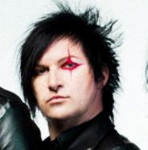
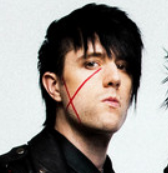

Vocal
Guitarra Solo

Bateria

Jinxx
Violino
Violino

Lonny Eagleton
Baixo
Baixo
Número: 685
Black Veil Brides é uma banda americana de rock formada em 2006 em Cincinati, Ohio, pelo vocalista Andy Biersack.
O grupo se tornou conhecido por seu visual excêntrico, maquiagens, pinturas pretas, roupas de couro e cabelos longos,
todos inspirados nas personas de palco de Kiss, Misfits, Alice Cooper, Mötley Crüe, W.A.S.P, e outros atos de glam metal
e shock rock da década de 1980.
Em 17 de junho de 2009 a banda lança o seu single de estreia, "Knives and Pens", com
um videoclipe lançado exclusivamente no YouTube. É uma das canções mais populares da banda, com o videoclipe alcançando
mais de 100 milhões de visualizações no YouTube.
O seu álbum de estreia, We Stitch These Wounds, foi lançado em 2010, e alcançou a posição de número #36 na Billboard.
O segundo álbum estúdio da banda, Set the World on Fire, foi lançado em 2011 e apresenta fortes influências do glam metal.
O álbum alcançou a posição de número #17 na Billboard. O terceiro álbum da banda, Wretched and Divine: The Story of the Wild
Ones, foi lançado em 2013 e alcançou a posição de número #7 na billboard. Wretched and Divine é um álbum conceitual de ópera
rock e spoken word.
O quarto álbum da banda chamado Black Veil Brides IV foi lançado em 2014 e alcançou a posição de
número #10 na Billboard.
Quatro anos depois, a banda lança seu quinto álbum, Vale, sendo um sucesso entre o público
e a crítica.
A banda já lançou quatro EP's, Sex and Hollywood em 2007, Never Give In em 2008, Rebels em 2011 e The Night em 2019,
sendo The Night o primeiro com o baixista Lonny Eagleton após a saída de Ashley Purdy.
A banda também lançou um
single chamado "Unbroken", que entrou na trilha sonora do filme The Avengers, além de um longa-metragem chamado Legion
Of The Black.
Em 2015 a banda lança seu primeiro DVD ao vivo intitulado Alive and Burning.
Em 2020, para
comemorar o aniversário de 10 anos do álbum de estreia We Stitch These Wounds, a banda regravou o álbum sob o selo da
Sumerian Records. A regravação foi lançada em julho de 2020 e foi intitulada Re-Stitch These Wounds.
Seu mais recente
lançamento é o álbum The Mourning, lançado neste ano (2022).